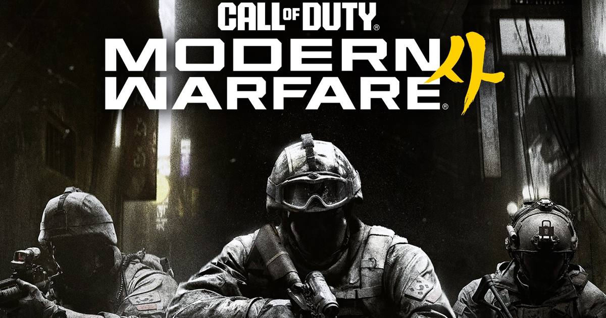

Modern Warfare 4 Will Remove Real Itaewon Disaster Footage From Its Opening on November 12
Activision apologized on Friday and confirmed the real 2022 Itaewon crowd-crush footage in Modern Warfare 4's opening cinematic will be removed in the November 12 update, after bereaved families demanded its removal.

One week after launch, Call of Duty: Modern Warfare 4 is facing its first real controversy — and Activision has now said it will fix it. The company apologized on Friday, October 30, and confirmed that real news footage of the 2022 Itaewon crowd crush, used in the game's opening cinematic, will be removed in an update on November 12.
What happened
Modern Warfare 4 launched worldwide on October 23. Its story is built on a fictional premise: a North Korean invasion of South Korea. To set that scene, the opening cinematic used real news coverage of the Itaewon disaster — the crowd crush in Seoul's Itaewon district on October 29, 2022, when more than 100,000 people packed narrow streets for Halloween and nearly 160 people died.
That choice did not stay quiet for long. The 10.29 Itaewon Disaster Bereaved Families Association and civic groups issued a statement calling the use of real disaster footage for entertainment inappropriate and demanding the scene be removed. Reporting on their statement described footage of rescue attempts, people carried out on stretchers, and body bags on the street being repurposed for the game, including a clip of CPR being performed on a collapsed person reported to run about three seconds.
Activision's response
Activision had previously explained that it used real news footage to establish the game's fictional narrative, and said it was "not intended to reference or trivialize the Itaewon disaster or any other real-world tragedy in any way, shape or form."
On Friday, the company went further: a public apology to the bereaved families and victims, plus a date. The footage will be completely removed in the game update releasing November 12. Until that patch lands, the opening still plays as shipped.
One point of friction remains. The families association said Friday that it had still not received a direct apology from the company, even as Activision apologized publicly. That gap — a public statement versus a direct one — is worth watching as November 12 approaches.
Why this one matters
Games borrow from real history all the time, but there is a line between evoking a real place and reusing footage of real people who died there, and this week showed exactly where players and families draw it. Credit where it is due: Activision moved fast once the families spoke, with a dated fix rather than a vague promise. The test now is simple — ship the November 12 patch, and make the apology direct.
Sources: TheGamer, Pixel Herald, Digital Today
Gear up: Razer — mice, keyboards, headsets and laptops.